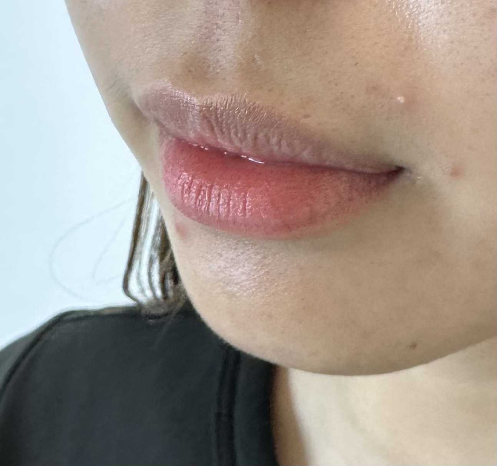
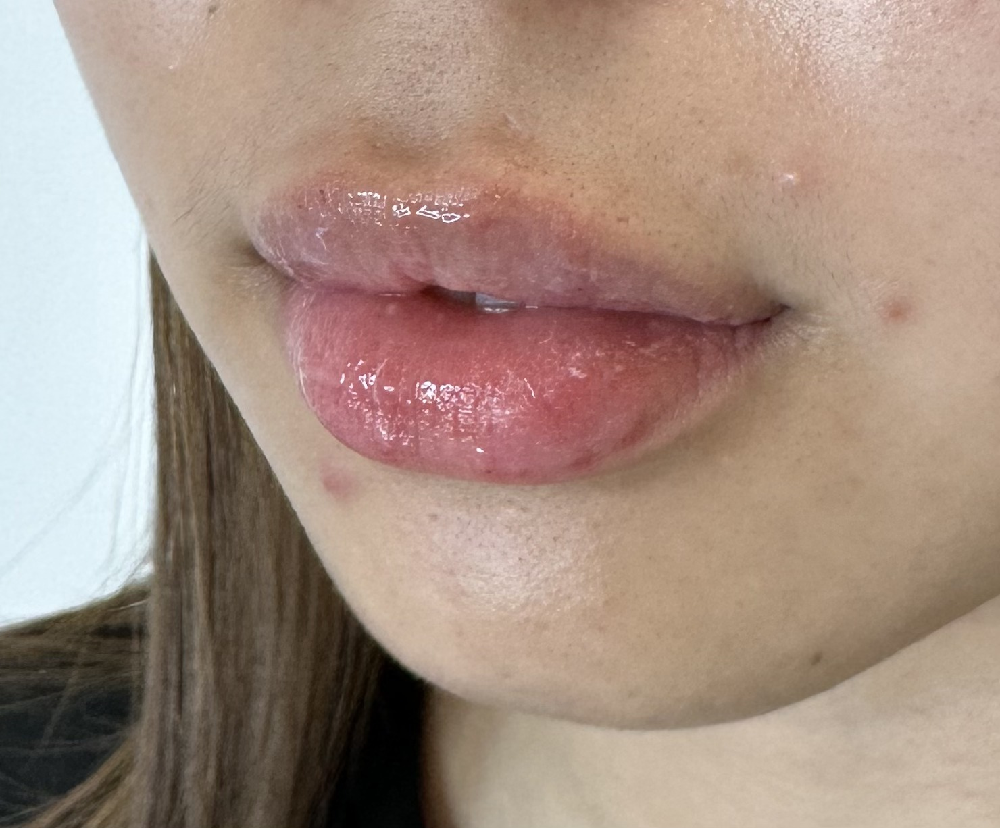

Real Result · One Syringe
LIP FILLER
done right.

Before

After
She said make them fuller but do not make it obvious.
So we did one syringe and stopped.
So we did one syringe and stopped.
DM “Lips” to learn more
@luxury_beauty_aestheticz
Shared with client consent. Individual results vary.